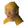
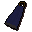
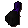
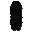
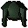

Valaine's Shop of Champions.
Inventory config
championshopRun by

Valaine. Open in knowledge graph →Located in: River Lum
Stock
| Item | Stock | Value | Sells for |
|---|---|---|---|
 Cape | 2 | 32 gp | 41 gp |
 Black full helm | 1 | 1056 gp | 1372 gp |
 Black platelegs | 1 | 1920 gp | 2496 gp |
 Adamant platebody | 1 | 12800 gp | 16640 gp |
Shop sells at 130.0% of item value and buys at 40.0%.
This is a general store: it accepts any tradeable item.